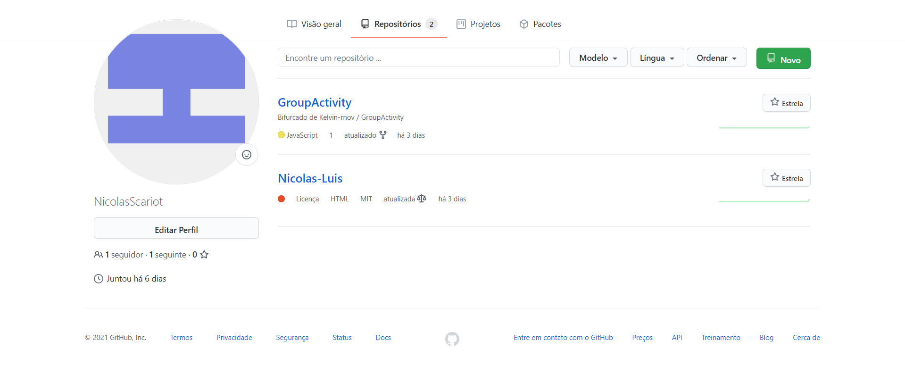
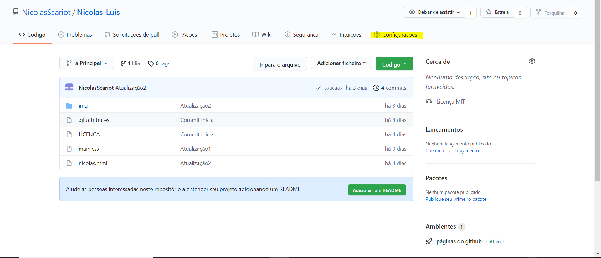
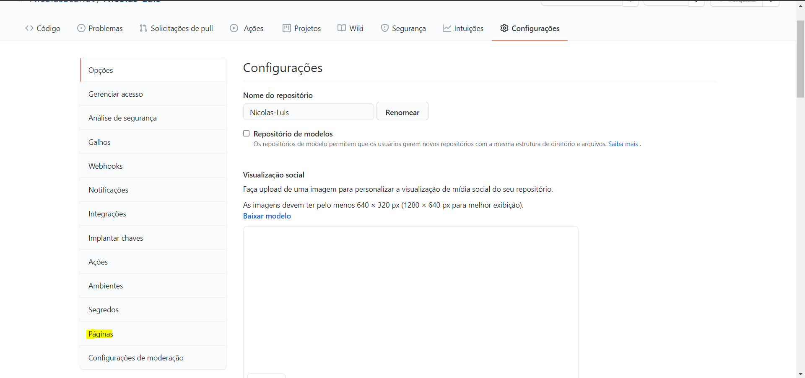
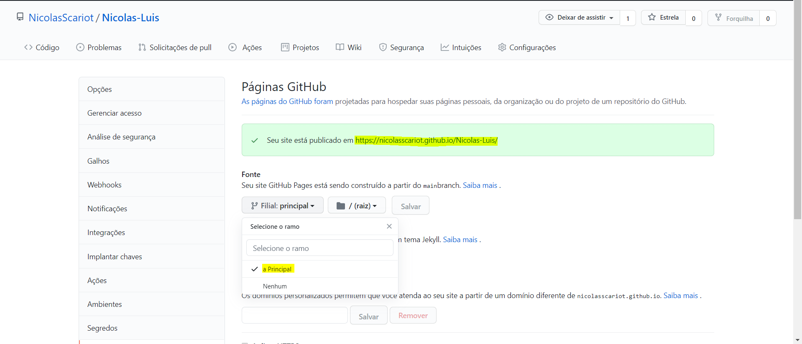

Sobre o GitHub Pages
O GitHub Pages é um serviço de hospedagem de site estático que usa arquivos HTML, CSS e JavaScript diretamente de um repositório no GitHub e, como opção, executa os arquivos por meio de um processo e publica um site.
É possível hospedar seu site no domínio "github.io" do GitHub ou no seu próprio domínio personalizado. Se o seu site de projeto for publicado de um repositório privado ou interno pertencente a uma organização que usa GitHub Enterprise Cloud, você poderá gerenciar o controle de acesso para o site.
Limites de uso
Os sites do GitHub Pages estão sujeitos ao seguintes limites de uso:
Se o seu site exceder essas cotas de uso, talvez não possamos atender a ele ou você receba um e-mail formal do Suporte do GitHub ou Suporte do GitHub Premium sugerindo estratégias para reduzir o impacto do site em nossos servidores, como colocar uma rede de distribuição de conteúdo (CDN, Content Distribution Network) de terceiros na frente do site, usar outros recursos do GitHub, como versões, ou migrar para outro serviço de hospedagem que possa atender melhor às suas necessidades.
Tutorial do GitHub Pages
Antes de tudo, você precisa ter um repositório criado e seus arquivos dentro.(Porderá aprender a como fazer isso aqui no nosso site, na parte do GitHub).
Passos
Clique no repositório que deseja gerar o GIHub Pages.
Após entrar no repositório, clique na opção "Configurações".
Após clicar nas "Configurações" e vá em "Páginas".
Abrindo a aba "Págianas", vá em fontes e selecione a versão que você nescessita. Logo em seguida aparecerá a URL do seu site.(Caso o buscador não encontre o endereço, adicione o nome do seu arquivo ".HTML")

$name = ['Nícolas', 'Luís'] ['Lígia'], ['Alves'];
$sudo su